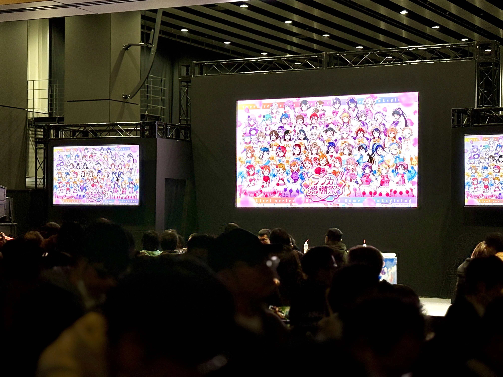
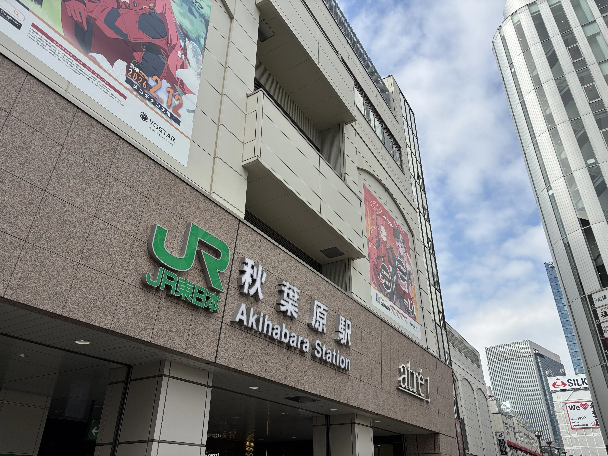
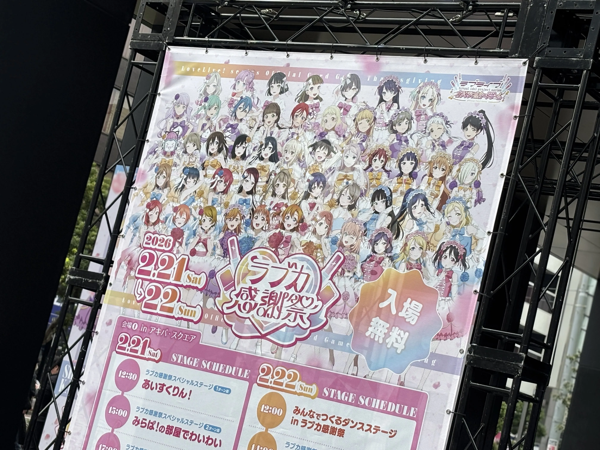
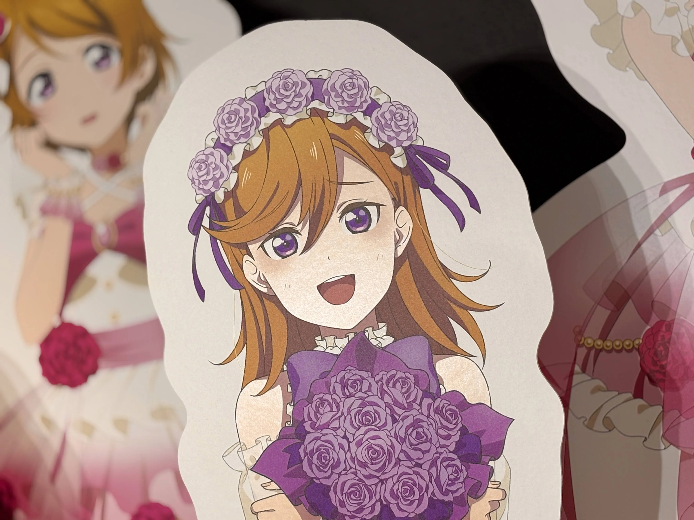
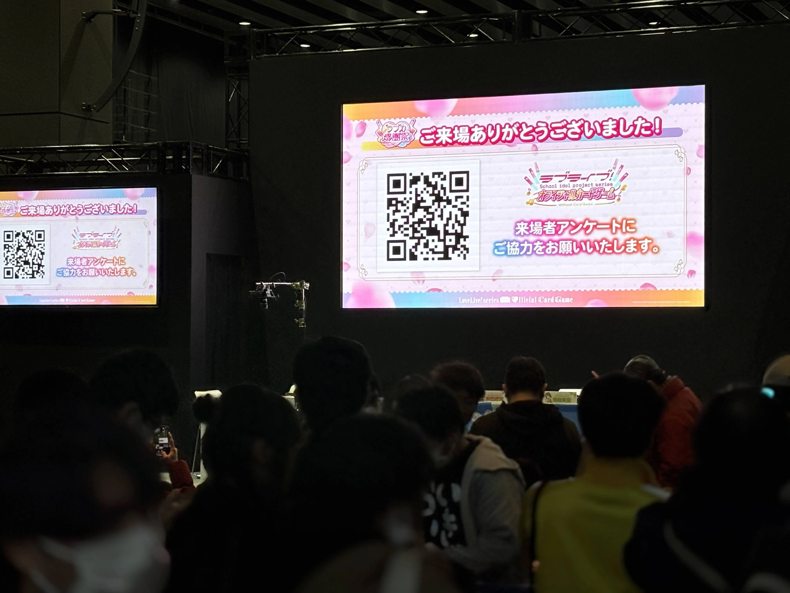
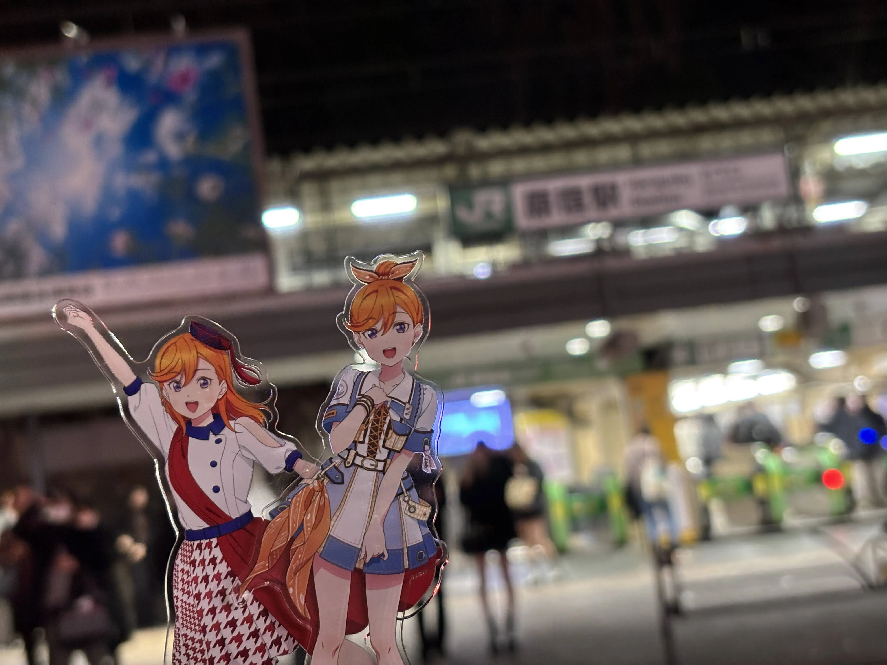

ラブカ感謝祭に参加しました。
1日目はやる気が起きず最後の公演のみ現地で参加。
チケットは持っていなかったものの、立見席の後ろなら見れるという状態でした。
伊達さゆりさんと坂倉花さんが参加されるステージでした。
とても可愛い演技や新衣装のカードが見られて良かったですよ。

2日目。ヲタクと約束をしていたので前日とは違い朝から活動。
秋葉原駅ですね。

ベルサール秋葉原の展示を見に行きました。

会場で配られていたカードのスタンプラリーなども回りました。
UDXのステージ側にはパネルも展示されていましたよ。

ステージの方も結構面白かったですよ。
ラブカを実際にプレイしていないので盛り上がる場所（？）が分からなかったのはここだけの話…笑

オマケ。その後ヲタクと原宿を散歩しました。楽しかったです。
